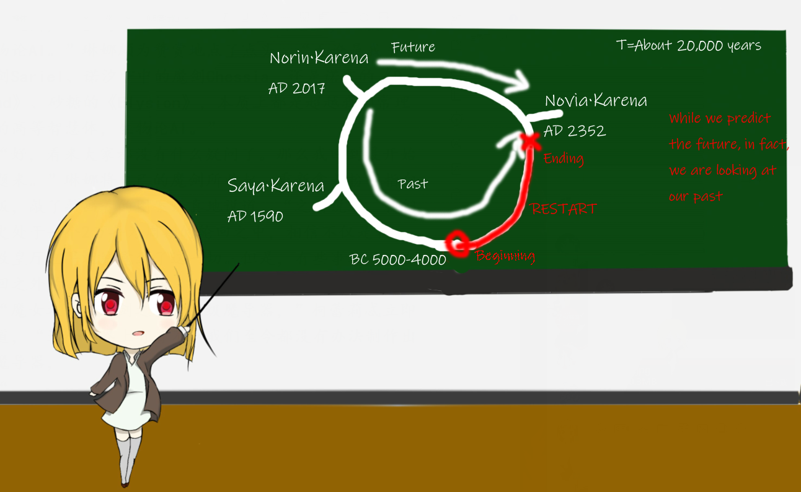

第二百零九章 井中的地下城
2864 字
第六卷：圣女再临 第209章
第二百零九章 井中的地下城
“用不着一醒来就抱在一起亲吧……”看着房间里那对如胶似漆的双子姐妹，房门外的琳娜·卡蕾娜不由得擦了擦额上的汗。
“我觉得这里就你没资格说她们，每天早上我基本上都是被你个吻醒的。”
当然，在一旁的薇娅还是不忘继续吐槽自己的姐姐。
“那明明就是我对薇娅的爱！而且，薇娅不觉得被公主吻醒的睡美人很浪漫吗？”
“吻醒睡美人的不一定是公主，还有可能是青蛙。”
“薇——娅——”
“呃……曾，曾祖母？”在一旁的诺汐与诺霖两人察觉到了那对正在拌嘴的吸血鬼之后，立即红着脸退到了一边，两人的手还牵在一起，十指相扣，看起来相当有爱。
“不要叫称呼，直接叫我们的名字。”琳娜似乎还很在意这些，虽然已经有400多岁了，但是她还是认为自己是相当年轻的，才不想被诺汐和诺霖称呼为曾祖母呢。
“是的，直接叫名字就好了。实在不行就和菲娅一样最后加个‘大人’也行。”在一旁的薇娅附和道，“琳娜，该说正事了。”
“嗯，母亲留下的信息，诺霖你应该也看见了吧。也是时候把这个世界的真相和你们说清楚了。”琳娜的神情变得严肃了起来，走到了姐妹俩的身边，“和我们来吧，也是时候把《DreamLand》相关的一切告诉你们了。”
“关于《DreamLand》的一切？”当然，此时的诺汐还处于相当疑惑的状态之中。不过她也没有多想，只要跟在妹妹的身边就好了。
“薇娅，准备传送吧。”
“是。”薇娅点了点头，轻轻抬起自己的手，“Imitate——空间传送，坐标设定完成，目标地下城。”手指轻轻在空中划出了一个圈，姐妹俩也立即跟着琳娜一起走了进去。
“好臭……”走出任意门外便是扑面而来一股地下水的酸臭味，令诺霖差点把刚刚吃的小饼干给呕出来了。
“这，这里是……”在一旁的诺汐倒也是有点反胃，看着眼前那漆黑的一片，她不由得好奇起了这里到底是什么。摸了摸周围的墙壁，感觉似乎相当潮湿，异味也相当严重。
“苔藓？”看了看自己的手指，的确有点奇怪的样子。
“毕竟这里是下水道，常年不通风，有点味道也很正常。”薇娅关掉了自己的任意门，披上了一层魔力的外衣，用以回避掉地下水沟的怪味。
“下水道？这里到底是？”
诺霖也学着薇娅的样子给自己和诺汐展开了一层屏障用以隔绝下水道中传来的怪味。
“千羽学院后花园那边不是有一口井吗？往井里面走就能走到这里了。”琳娜轻轻弹了一下手指，瞬间，原先昏暗的通道里一下子变得明亮了起来，用着魔导水晶制成的照明灯正散发着淡蓝色的光芒，用以照亮前面的道路，“这里是最早为了躲避教皇厅的追杀而建立的一个秘密基地，是千羽学院的最高机密，除了我们和千羽家的历代家主之外，并没有人知道这里。”琳娜带着她们在这狭小的通道里行走着。
“井中的地下城……”
诺霖记得这个，在纱雪学姐的书上有写过。
千羽学院七大不可思议的最后一项——井中的地下城。原先以为只是纱雪学姐写在上面凑数的，结果竟然是真实存在的。就像是RPG里一样，主角进入到井中总会发生一些事情。
“地下城吗？这里并不能称为地下城啦。”
琳娜笑了笑，这个小地方与教皇厅在意大利建立的真·地下城比可是逊色太多了，本质上只是她们用来藏东西的秘密基地而已。
“你看，这里就是目的地了。”
甚至都没有设置什么迷宫一般的路线，沿着下水道直走一段路就可以看到那扇大门了。琳娜轻轻一推，伴随着大门的打开，一个类似于书房的房间展现在了姐妹俩的面前。
“这里是……”
书架上积上了一层厚厚的灰，看起来已经有很多年没有打扫过了。诺汐取出了一本书翻了翻，泛黄的书页上写着潦草的字迹，感叹于竟然是手写的同时，她开始发挥出自己的能力辨认起了上面的字迹。
原先以为写着很多重要的魔术学机密，结果仔细一看，字里行间都满满的写着“Via”这三个字母。
“Via Via Via Via……”
“等等，那是我的日记啊，不准翻！”琳娜发现自己的痴女日记被后代捏在手中之后，当即便是跑到了诺汐的身边，红着脸从诺汐的手中的将日记本夺回。
“琳娜……”倒是薇娅早就已经习惯了这些，琳娜的痴女日记她已经基本上可以倒背下来了，只是在这种时候还是未免会感觉几分尴尬。
“咳咳咳，这个小插曲就不要在介意了。”琳娜将她的痴女日记放到了一旁的书柜里。清了清嗓子后继续向着姐妹俩介绍道，“欢迎来到千羽学院的零号图书馆，里面可是藏着整个魔术界的最高奥秘哦。等等，诺霖，不准乱翻啊！”
“这……”然而诺霖并没有听琳娜的劝告，宛若受到上天的指使一般，拿下了书架上的一本书开始阅读了起来。
“等等，那本书是——”
“这个究竟是……”
诺霖平静的脸上，逐渐浮现出了震惊的神色，导致在一旁的诺汐又变得疑惑了起来。上面写着的故事她完全有印象，和那个涌入到自己脑海中的故事很相似。
『所有人都认为这个世界已经被神明所抛弃了，就连教会也只想着从女王的手中夺权，在这个宛若着末世一般的世界，人性之恶处处显露无疑。』
『唯独只有帝国的二公主诺维娅·卡蕾娜向着神明献上了真诚的祈祷，她被选为了神明的圣女，获得了神明的力量来拯救这个世界』
“诺维娅·卡蕾娜……为什么这个名字感觉那么熟悉？还有……神明的力量，是指魔术吗？”
“你知道为什么我会将存在于魔力的介质因子称为Novia因子吗？”琳娜轻声地说道，“Novia因子这个名字的来源，就是源自于《Bible of Atlantis》，为了纪念《DreamLand》的主人——诺维娅·卡蕾娜。”
“《Bible of Atlantis》？好熟悉的名字。”在一旁的诺汐听着琳娜的话语，不由得开始好奇了起来。”
她曾经在哪里听说过这个名字。
“难道说是那个沉没于大西洋底的那个古代大陆？”
位于欧洲到直布罗陀海峡附近的大西洋之岛，传说中拥有高度文明发展的古老大陆，最早出自于古希腊哲学家柏拉图的著作之中，后人也将其视为“理想国”的原型。
“沉没什么的只是后人对其的错误解读而已。两万年前的亚特兰蒂斯帝国，是一个北至冰岛，南至直布罗陀，包含着现在的英法德地区的大帝国。只不过由于环境的剧烈变化而最终灭亡了而已。”
“这本《亚特兰蒂斯圣典》，是后人经过考究和揣测所复原的那个时代的故事，只不过，由于古代文明的覆灭，能留下的线索也并不多，上面记载的内容，也并不一定准确，很大程度上受到了宗教的影响。”琳娜叹了一口气，本来想着这段故事由自己所描述出来的，结果却是被诺霖抢先一步看到了，该说这就是命运吗？
“亚特兰蒂斯帝国，是我梦中所见的那个城市吗？”诺霖仔细地阅读了起来。
“嗯，也就是《DreamLand》故事的真正舞台。”
“两万年前存在于西欧的大帝国，不对，我在梦中见到的那个年份是公元2237年，应该是200多年后的未来才对！”诺霖立刻开始反驳了起来，“而且，为什么里面还会有我的雕像，难道说是重名吗……这，这也太巧了。”
神明指的是自己？希望女神诺霖·卡蕾娜？
不可能吧……
“接下来说的这一切，也许已经超出了你们的世界观之外，但是还是请你们静下心来好好听我所讲述。”琳娜咳了一声，从诺霖的手中将那本《圣典》抽走，“这是我和薇娅经过了300多年的考究得出的结果——我们的文明，正以2万年为一个周期，进行着永无止境的轮回。”

【画师：西风】